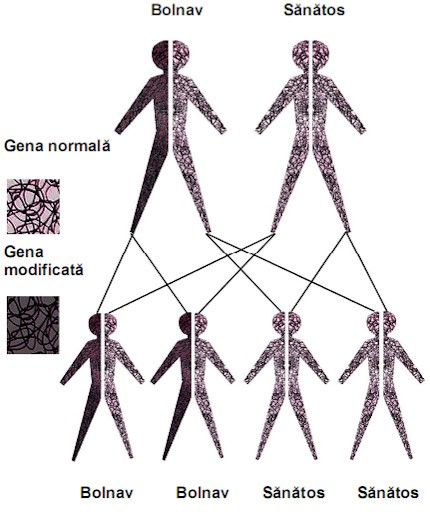
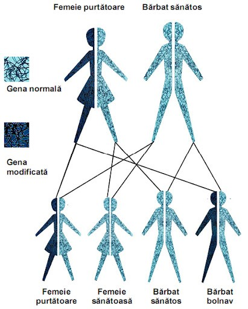

Genetica umană
Introducere
Datorită unor considerente de ordin etic și moral studiile de genetică umană se pot face folosind o gamă extrem de restrânsă de mijloace de studiu. Dintre acestea amintim:
- anamneza (istoricul familial);
- studiul maladiilor ereditare;
- studiul transmiterii anumitor caractere observabile (culoarea ochilor, forma nasului, grupa de sânge etc.);
- studiul cazurilor de consangvinizare.
Complementul cromozomial normal
Genomul uman este diploid, adică are două seturi de cromozomi. O celulă umană are 46 de cromozomi, adică 23 de perechi de cromozomi omologi. Excepție fac celulele sexuale (spermatozoizii și ovulele) care au doar 23 de cromozomi.
După cum se observă în imaginea alturata, există 23 de perechi de cromozomi, 22 de perechi de cromozomi identici (numiți autozomi) și o pereche de cromozomi diferiți (numiți heterozomi sau cromozomi ai sexului). Autozomii conțin informații despre caracteristicile corpului, iar heterozomii conțin, pe lângă informații legate de structura corpului, informații legate de caracterele sexuale. Heterozomii, la om, se notează X și Y. Femeile au doi cromozomi X (sunt homozigote), iar bărbații au un cromozom X și unul Y în fiecare celulă (sunt heterozigoți).
Bolile genetice reprezintă toate anomaliile care apar ca urmare a dereglării materialului ereditar. Pentru bolile genetice nu este esențial factorul moștenirii maladiei, ci faptul că boala este cauzată de dereglările aparatului ereditar. Bolile genetice includ și boli ereditare.
- Boli cromozomice :sindromul Down, sindromul Turner
- Boli monogenice: daltonism, hemofilie
- Malformații congenitale: Sindromul Patau, cebocefalia
Boală genetică autozomală
Mutațiile genetice autozomale se caracterizează prin apariția unor sindroame:
- Sindromul Patau (Trisomia 13)
- Sindromul Down (Trisomia 21)
Mutațiile genice autozomale sunt:
- dominante:
- polidactilia (prezența unor degete suplimentare)
- sindactilia (prezența unor degete lipite)
- prognatismul (evidențierea exgerată a bărbii)
- dominante recesive:
- albinism(absenta pigmentului melanic)
- recesive:
- anemia falciformă ( enzimopatie - modificarea hematiilor care iau formă de seceră)

